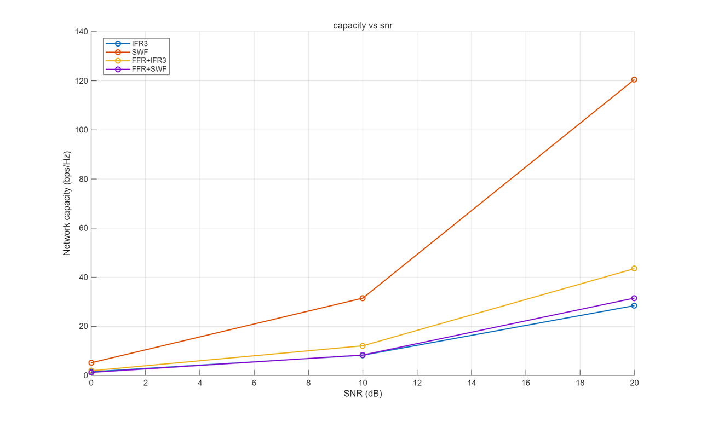
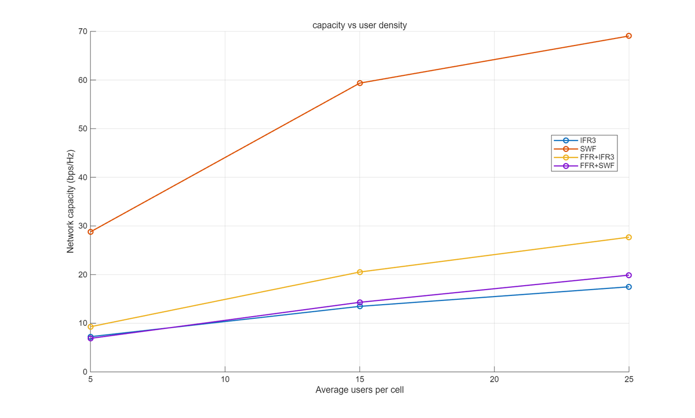
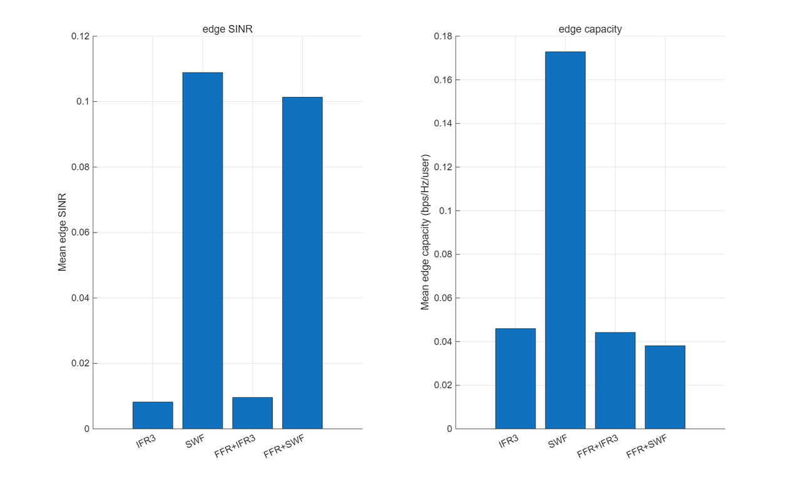

5G 分数频率复用仿真展示
5G 分数频率复用（FFR）项目：第一作者综述论文 + 私有 MATLAB 自主复现 19-cell 策略对比；公开页面用 Python 合成数据展示 SNR、边缘 SINR、容量和干扰趋势验证流程。
展示内容
构造 SNR、用户密度、容量和干扰趋势，展示 19-cell 策略对比逻辑。
比较 IFR3、SWF、FFR+IFR3、FFR+SWF 等策略在容量和边缘用户体验上的差异。
检查容量随 SNR 增长、FFR 改善固定分配边缘 SINR、FFR+SWF 保持接近 SWF 的边缘性能等规律。
生成 Fig.3 / Fig.4 风格图表，便于结果核查与技术说明。
论文与复现口径
论文是第一作者综述，收录于 CSIC 2024 会议论文集，刊于 HSET Vol. 124, pp. 308-313，DOI: 10.54097/jf1y1p12。私有 MATLAB 项目是对综述所涉文献 19-cell 实验的自主复现；本公开仓库是该复现流程的 Python 合成数据展示版。
已核实复现结果（私有 MATLAB）
| 方法 | 容量增量 0→20 dB | 边缘 SINR | 对照结论 |
|---|---|---|---|
| SWF | +110.5 bps/Hz | 0.1184 | 干扰感知注水基线 |
| FFR+SWF | +28.2 bps/Hz | 0.1076 | 在频谱硬隔离下保持约 91% of SWF |
| FFR+IFR3 | +39.6 bps/Hz | 0.01061 | 边缘 SINR +13% vs IFR3 |
| IFR3 | +25.2 bps/Hz | 0.009363 | 固定等功率基线 |
趋势配置：Nf=12、Nsim=3、SNR=[0,10,20] dB、Um=[6,18]，三条断言全部通过。以上数字来自私有 MATLAB 复现实测输出，非本仓库合成数据。准确讲法是：FFR 对固定等功率分配有明确边缘增益；当功率分配本身已干扰感知时，组合的意义是在频谱硬隔离约束下保持接近的边缘性能。
仿真参数与方法配置
19 cells（1+6+12）· Nf=24 · SNR 0:5:25 dB · Um=10 Poisson mean · Nsim=20 · α=3.6 · Rayleigh · edge rule r≥R/4 · fixed seed
rho 同组掩蔽 · ifr3Mask · 等功率分配
全几何 rho · 全带 allowedMask · 迭代注水
全几何 rho · center + edge allowedMask · 等功率或迭代注水
实测复现图（私有 MATLAB）

Verified reproduction figure from the private MATLAB run (2026) — not synthetic demo data.

Verified reproduction figure from the private MATLAB run (2026) — not synthetic demo data.

Verified reproduction figure from the private MATLAB run (2026) — not synthetic demo data.
图表复现状态
| 图表 | 展示目标 | 脚本 | 输出内容 |
|---|---|---|---|
| Fig.3 Capacity vs SNR | 展示容量随 SNR 增长，SWF 类策略提升总容量 | python scripts/generate_figures.py | 容量曲线与策略对比 |
| Fig.4 Edge SINR | 展示 FFR 改善固定分配边缘 SINR，FFR+SWF 在硬隔离下保持接近 SWF 的边缘性能 | python scripts/generate_figures.py | 边缘 SINR 趋势图 |
| Capacity vs user density | 展示用户密度变化下容量和干扰趋势 | python scripts/run_paper_alignment.py | 密度扫描结果 |
| Trend verification | 自动验证定性趋势是否成立 | python scripts/verify_paper_trends.py | 趋势检查报告 |
两层正交性架构
flowchart LR A["19-cell geometry"] --> B["rho coupling matrix"] B --> C["IFR3 same-group masking"] B --> D["FFR user x subband allowedMask"] C --> E["linear-domain interference sum"] D --> E E --> F["SINR / capacity / edge metrics"] F --> G["trend assertions"]
几何层描述 19-cell 小区间距离耦合，同频层分别通过 IFR3 矩阵掩蔽和 FFR allowedMask 实现正交约束，最后在每个子带上线性累加干扰并计算指标。
FAQ
使用迭代互注水思路，按用户排序计算闭式水位，并用功率变化阈值和最大迭代次数控制收敛。
私有 MATLAB 复现按用户半径不小于 cellRadius/4 判定边缘用户。
中心小区加两圈邻区覆盖主要同频干扰来源，同时保持仿真规模可控。
公开层展示管线和趋势验证能力，不发布私有 MATLAB 源码或原始复现输出。
本地运行
pip install -e ".[test]"
python scripts/run_paper_alignment.py
python scripts/verify_paper_trends.py
python scripts/generate_figures.py
pytest